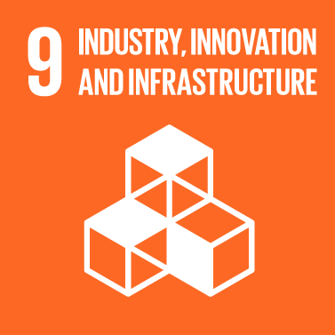

Goal 9: Build resilient infrastructure, promote sustainable industrialization and foster innovation
Investments in infrastructure – transport, irrigation, energy and information and communication technology-
are crucial to achieving sustainable development and empowering communities in many countries. It has long been
recognized that growth in productivity and incomes, and improvements in health and education outcomes require
investment in infrastructure.
Inclusive and sustainable industrial development is the primary source of income generation, allows for rapid and
sustained increases in living standards for all people, and provides the technological solutions to environmentally
sound industrialization.
Technological progress is the foundation of efforts to achieve environmental objectives, such as increased resource
and energy-efficiency. Without technology and innovation, industrialization will not happen, and without industrialization,
development will not happen.

Goals Targets
1) Develop quality, reliable, sustainable and resilient infrastructure, including regional and transborder
infrastructure, to support economic development and human well-being, with a focus on affordable and
equitable access for all.
2) Promote inclusive and sustainable industrialization and, by 2030, significantly raise industry’s share of
employment and gross domestic product, in line with national circumstances, and double its share in least
developed countries.
3) Increase the access of small-scale industrial and other enterprises, in particular in developing countries,
to financial services, including affordable credit, and their integration into value chains and markets.
4) By 2030, upgrade infrastructure and retrofit industries to make them sustainable, with increased resource-use
efficiency and greater adoption of clean and environmentally sound technologies and industrial processes, with
all countries taking action in accordance with their respective capabilities.
5) Enhance scientific research, upgrade the technological capabilities of industrial sectors in all countries, in
particular developing countries, including, by 2030, encouraging innovation and substantially increasing the
number of research and development workers per 1 million people and public and private research and development spending.
6) Facilitate sustainable and resilient infrastructure development in developing countries through enhanced financial,
technological and technical support to African countries, least developed countries, landlocked developing countries
and small island developing States 18.
7) Support domestic technology development, research and innovation in developing countries, including by ensuring a
conducive policy environment for, inter alia, industrial diversification and value addition to commodities.
8) Significantly increase access to information and communications technology and strive to provide universal and
affordable access to the Internet in least developed countries by 2020.